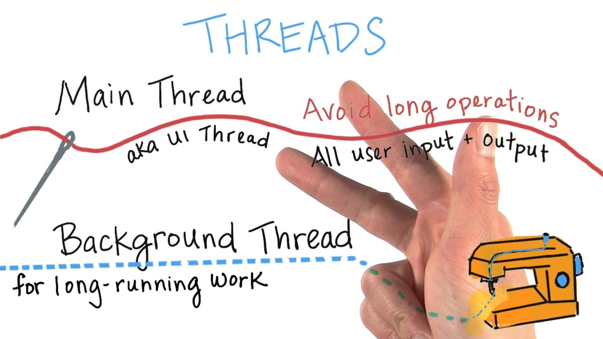
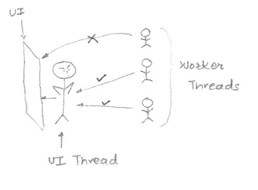
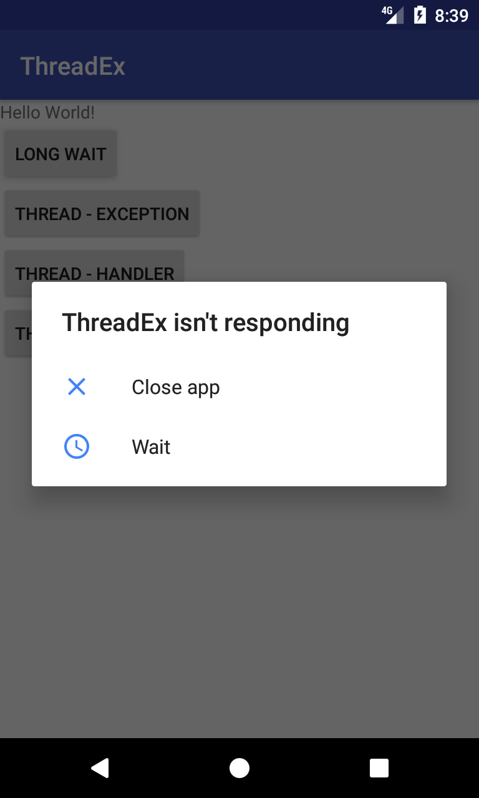
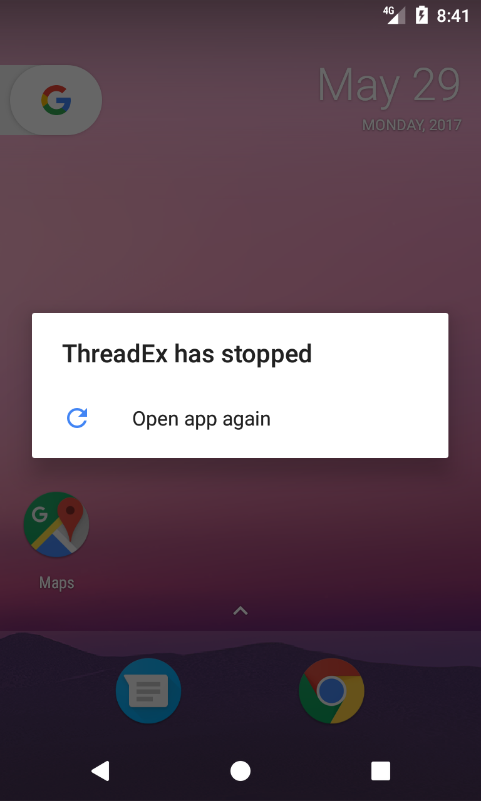
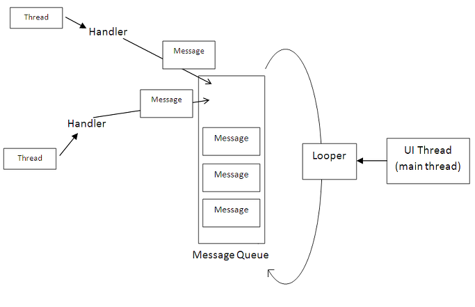
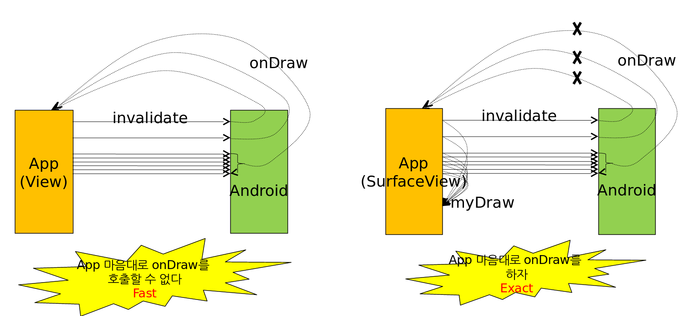

layout: true .top-line[] --- class: center, middle # 쓰레드 --- ## 메인 쓰레드/서브 쓰레드 * 메인 쓰레드 * 서브(백그라운드, 워커) 쓰레드   --- ## Avoid Long Operation * 이벤트 처리 메소드에서 오랬동안 리턴하지 않으면 - 응답 없음! ```java // 클릭하면 오른쪽과 같이 된다 public void onLongWaitClick(View v){ long futureTime= System.currentTimeMillis()+10000; while(System.currentTimeMillis() < futureTime){ synchronized (this){ try{ wait(futureTime-System.currentTimeMillis()); }catch(Exception e){ } } } TextView textView= (TextView)findViewById(R.id.textView); textView.setText("Hello, jmlee"); } ```  .footnote[https://github.com/jyheo/AndroidTutorial/blob/master/ThreadEx/app/src/main/java/com/example/jyheo/threadex/MainActivity.java#L31] --- ## Avoid Long Operation * 워커 쓰레드 생성 - 워커에서 UI(View) 변경 - 안드로이드에서는 UI(메인) 쓰레드만 View 변경이 가능함 ```java public void onThreadExceptionClick(View v){ MyThread myThread= new MyThread(); myThread.start(); } private class MyThread extends Thread{ public void run(){ long futureTime= System.currentTimeMillis()+10000; while(System.currentTimeMillis() < futureTime){ synchronized (this){ try{ wait(futureTime-System.currentTimeMillis()); }catch(Exception e){ } } } TextView textView= (TextView)findViewById(R.id.textView); textView.setText("Hello, jmlee"); } } ```  .footnote[https://github.com/jyheo/AndroidTutorial/blob/master/ThreadEx/app/src/main/java/com/example/jyheo/threadex/MainActivity.java#L44] --- ## 해결 방법 * 메인 쓰레드와 통신: 워커 쓰레드가 메인 쓰레드의 핸들러로 메시지를 보냄 * runOnUiThread: 워커 쓰레드가 Runnable을 만들어서 runOnUiThread 호출 * SurfaceView: SurfaceView는 메인 쓰레드가 아니어도 업데이트 가능 * 기타 방법으로 AsyncTask도 있음 --- ## 메인 쓰레드와 통신 <img src="images/thread-com1.png" border=1 style="position:absolute; left:150px; top:150px; width:400px;">  --- ## 메인 쓰레드와 통신 * 메인 쓰레드에서 핸들러 생성 - Handler 객체를 생성하기만 하면, 쓰레드의 메시지 루프에 자동으로 연결 됨 ```java int count=1; *Handler mHandler= new Handler(){ @Override * public void handleMessage(Message msg) { super.handleMessage(msg); Bundle bundle= msg.getData(); TextView textView= (TextView)findViewById(R.id.textView); textView.setText(bundle.getString("jmlee")+" "+count++); } }; public void onThreadHandlerClick(View v){ MyThreadHandler myThread= new MyThreadHandler(); myThread.start(); } ``` .footnote[https://github.com/jyheo/AndroidTutorial/blob/master/ThreadEx/app/src/main/java/com/example/jyheo/threadex/MainActivity.java#L20] --- ## 메인 쓰레드와 통신 * 워커 쓰레드에서 메인 쓰레드의 핸들러로 메시지 전달 ```java private class MyThreadHandler extends Thread { public void run(){ long futureTime = System.currentTimeMillis() + 10000; while (System.currentTimeMillis() < futureTime) { synchronized (this){ try { wait(futureTime - System.currentTimeMillis()); } catch (Exception e) {} } } Bundle bundle = new Bundle(); bundle.putString("jmlee", "Hello, Jmlee"); Message msg = new Message(); msg.setData(bundle); * mHandler.sendMessage(msg); } } ``` .footnote[https://github.com/jyheo/AndroidTutorial/blob/master/ThreadEx/app/src/main/java/com/example/jyheo/threadex/MainActivity.java#L74] --- ## runOnUiThread * Runnable을 만들어서 메인 쓰레드에게 실행하도록 함(runOnUiThread 호출) ```java public void onThreadRunOnUIClick(View v) { MyThreadRunOnUI myThread = new MyThreadRunOnUI(); myThread.start(); } private class MyThreadRunOnUI extends Thread{ public void run(){ long futureTime= System.currentTimeMillis()+10000; while(System.currentTimeMillis() < futureTime){ synchronized (this){ try{ wait(futureTime-System.currentTimeMillis()); }catch(Exception e){ } } } runOnUiThread(new Runnable() { public void run() { TextView textView= (TextView)findViewById(R.id.textView); textView.setText("Hello, jmlee"); } }); } } ``` .footnote[https://github.com/jyheo/AndroidTutorial/blob/master/ThreadEx/app/src/main/java/com/example/jyheo/threadex/MainActivity.java#L54] --- ## SurfaceView ```java public class GameView extends SurfaceView { public GameView(Context context) { super(context); getHolder().addCallback(this); } ... } ```  --- ## SurfaceView 이용 - 그래픽 애니메이션 * SurfaceView는 빠른 성능이 필요한 화면에서 주로 사용됨 * SurfaceView 사용 패턴 ```java *public class AnimatedSurfaceView extends SurfaceView * implements SurfaceHolder.Callback { // 1. SurfaceView 상속, Callback 인터페이스 구현 public AnimatedSurfaceView(Context context) { super(context); * holder = getHolder(); // 2. SurfaceHolder 객체 획득 (후에 사용됨) * holder.addCallback(this); // 3. SurfaceHolder 객체에 Callback 인터페이스 설정 thread = new BallAnimation(); } // 4. Callback 인터페이스 구현 * public void surfaceCreated(SurfaceHolder surfaceHolder) { thread.start() } * public void surfaceChanged(SurfaceHolder surfaceHolder, int i, int i1, int i2) { ... } * public void surfaceDestroyed(SurfaceHolder surfaceHolder) { try { thread.join(); } catch (InterruptedException e) {} } ... } ``` .footnote[https://github.com/kwanu70/AndroidExamples/blob/master/chap9/GraphicsTest/app/src/main/java/com/example/kwanwoo/graphicstest/AnimatedSurfaceView.java] --- ## SurfaceView 이용 - 그래픽 애니메이션 * SurfaceView에 그래픽 그리기 ```java class BallAnimation extends Thread { public void run() { while (true) { * // 1. 볼을 그릴 캔버스를 lockCanvas() 메소드를 통해 참조하고 캔버스에 락을 걸어 둠 * Canvas canvas = holder.lockCanvas(null); * // 2. 앞에서 얻은 캔버스에 볼을 그리고, 볼을 이동시킴 * canvas.drawColor(Color.WHITE); synchronized (holder) { for (int idx=0; idx<arBall.size(); idx++) { Ball B = arBall.get(idx); * B.move(getWidth(),getHeight()); * B.draw(canvas); } } * // 3. 캔버스 객체에 락을 풀어줌 * holder.unlockCanvasAndPost(canvas); } } } ``` **주의** 메인 쓰레드와 별도의 쓰레드에서 볼 애니메이션 루프를 수행 .footnote[https://github.com/kwanu70/AndroidExamples/blob/master/chap9/GraphicsTest/app/src/main/java/com/example/kwanwoo/graphicstest/AnimatedSurfaceView.java]